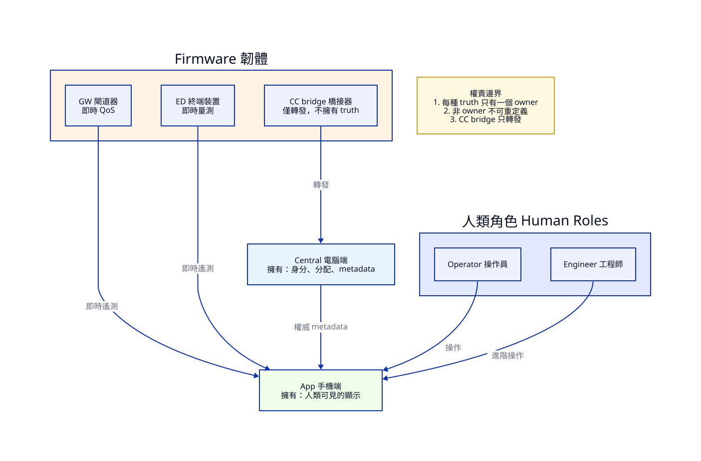
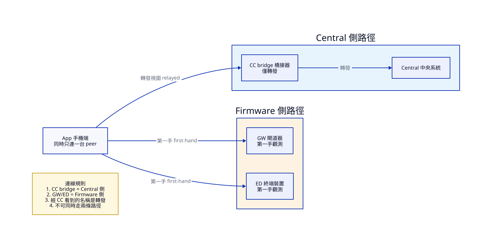
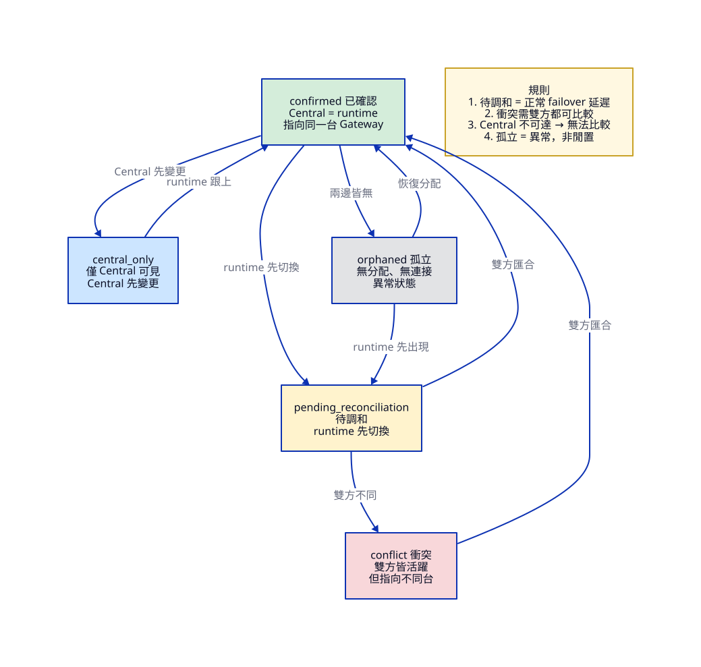

先看誰是 authority owner，誰只能轉述或顯示。

Source: shared-spec/system-actors-and-authority.d2
| 圖上術語 | 中文 | 說明 |
|---|---|---|
| Central (PC software) | 電腦端中央系統 | 擁有裝置身分、分配、metadata、認證、稽核的唯一權威 |
| Firmware (nRF52833) | 韌體 | 跑在 nRF52833 DK 上的三種角色總稱 |
| Gateway (GW) | 閘道器 | 韌體角色之一，負責 runtime QoS 和 local failover |
| End Device (ED) | 終端裝置 | 韌體角色之一，負責 runtime 量測 |
| CC bridge | CC 橋接器 | 韌體角色之一，只負責 BLE-to-Central 轉發，不擁有任何 truth |
| App (mobile) | 手機 App | 擁有人類可見的顯示、pending/error UX、local view state |
| Operator | 操作員 | 查看狀態、執行低風險操作的人類角色 |
| Engineer | 工程師 | 執行進階診斷和維護的人類角色，仍不可繞過 Central 權威 |
| authority owner | 權威擁有者 | 每種 truth 只有一個 owner，其他角色只能消費不能重定義 |
| runtime telemetry | 即時遙測資料 | Firmware 直接量測的數據（訊號強度、傳輸品質等） |
| authoritative metadata | 權威 metadata | Central 發布的官方裝置資訊（alias、assignment 等） |
先看 App 連到不同 peer 時，資料路徑怎麼分叉。

Source: shared-spec/session-topology.d2
| 圖上術語 | 中文 | 說明 |
|---|---|---|
| single active session | 單一活躍連線 | App 同時只連一台 BLE peer |
| Central-side path | Central 側路徑 | App 連到 CC bridge 時走的路徑，資料經轉發到達 Central |
| Firmware-side path | Firmware 側路徑 | App 直連 GW 或 ED 時走的路徑，資料是第一手觀測 |
| relay only | 僅轉發 | CC bridge 只做 BLE-to-Central 的橋接，不是 authority owner |
| canonical truth | 權威真相 | Central 維護的官方系統記錄 |
| first-hand BLE observation | 第一手 BLE 觀測 | App 直接從 GW/ED 收到的 BLE 數據，不經轉發 |
| relayed / cached view | 轉發/快取的視圖 | 經 CC bridge 取得的數據，不是 App 自己直接 BLE 觀測到的 |
| BLE connect | BLE 連線 | App 和某台韌體裝置建立的藍牙低功耗連線 |
| Session Scope Rules | 連線範圍規則 | 決定 App 目前能看到什麼、能走哪條路徑的規則 |
先看 pending_reconciliation 與 confirmed/conflict/orphaned/central_only 的轉移。

Source: shared-spec/fea-004-reconciliation-states.d2
| 圖上術語 | 中文 | 說明 |
|---|---|---|
| confirmed | 已確認 | Central 分配和 runtime 實際連接指向同一台 Gateway |
| pending_reconciliation | 待調和 | runtime 已切換但 Central 還沒跟上，屬正常 failover 延遲 |
| conflict | 衝突 | 兩邊都有 active Gateway 但指向不同台，必須同時顯示雙來源 |
| central_only | 僅 Central 可見 | Central 有分配記錄但 runtime 還沒觀測到連接 |
| orphaned | 孤立 | 既沒有權威分配，也沒有 runtime 連接，是異常狀態 |
| runtime changed first | runtime 先切換 | 韌體端先發生 failover，Central 尚未同步 |
| Central changed first | Central 先變更 | Central 先更新分配，韌體端尚未觀測到 |
| sources converge | 雙方匯合 | Central 和 runtime 最終指向同一台，回到 confirmed |
| both active, differ | 雙方皆活躍但不同 | 兩邊都有 Gateway 但不一致，進入 conflict |
| neither source | 兩邊皆無 | 完全沒有分配也沒有連接，進入 orphaned |
| not compared | 無法比較 | Central 不在可達範圍時，不能判定 conflict，只能標示此狀態 |
| failover lag | 故障切換延遲 | failover 發生後的短暫不一致是正常的 migration reality |